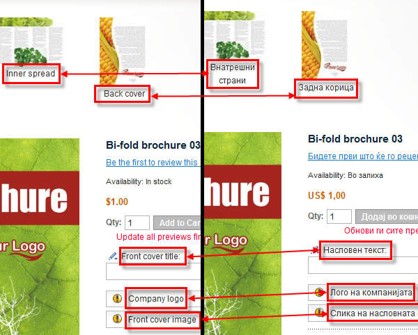
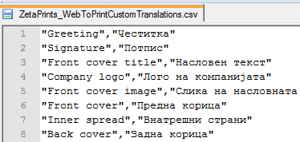
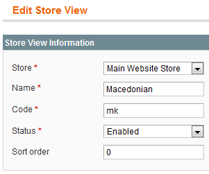
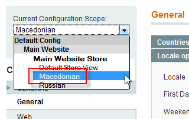
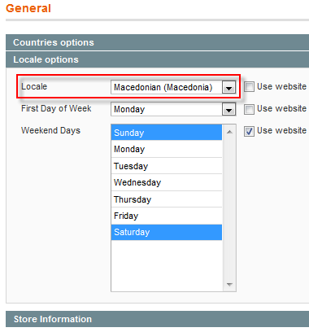
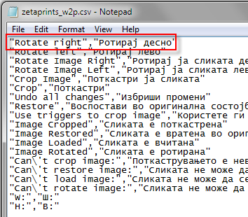
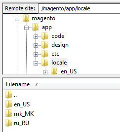
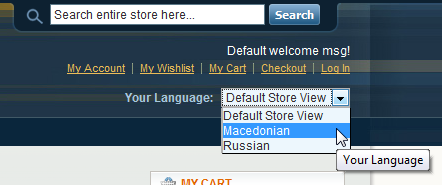

<?xml version="1.0" encoding="UTF-8"?><rss version="2.0"
	xmlns:content="http://purl.org/rss/1.0/modules/content/"
	xmlns:wfw="http://wellformedweb.org/CommentAPI/"
	xmlns:dc="http://purl.org/dc/elements/1.1/"
	xmlns:atom="http://www.w3.org/2005/Atom"
	xmlns:sy="http://purl.org/rss/1.0/modules/syndication/"
	xmlns:slash="http://purl.org/rss/1.0/modules/slash/"
	>

<channel>
	<title>Translation &#8211; Magento web-to-print &amp; dynamic imaging</title>
	<atom:link href="http://www.zetaprints.com/magentohelp/tag/translation/feed/" rel="self" type="application/rss+xml" />
	<link>http://www.zetaprints.com/magentohelp</link>
	<description>Just another WordPress site</description>
	<lastBuildDate>Fri, 07 Jun 2013 06:55:21 +0000</lastBuildDate>
	<language>en-US</language>
	<sy:updatePeriod>hourly</sy:updatePeriod>
	<sy:updateFrequency>1</sy:updateFrequency>
	<generator>https://wordpress.org/?v=4.4.1</generator>
	<item>
		<title>Label translations</title>
		<link>http://www.zetaprints.com/magentohelp/label-translations/</link>
		<pubDate>Mon, 02 May 2011 14:38:11 +0000</pubDate>
		<dc:creator><![CDATA[atanas]]></dc:creator>
				<category><![CDATA[Web-to-print administration]]></category>
		<category><![CDATA[Localization]]></category>
		<category><![CDATA[Translation]]></category>

		<guid isPermaLink="false">http://www.zetaprints.com/magentohelp/?p=12669</guid>
		<description><![CDATA[Translations for titles of pages, titles of text and image fields, hints and predefined values in templates are done separate from web-to-print extension interface translations. For example you have a template in English and want the field names to be in English and French depending on the user&#8217;s choice. Magento supports interface translation out of [&#8230;]]]></description>
				<content:encoded><![CDATA[<p>Translations for titles of pages, titles of text and image fields, hints and predefined values in templates are done separate from web-to-print extension <a title="Magento web-to-print translation" href="../../../magento-web-to-print-localization/">interface translations</a>. For example you have a template in English and want the field names to be in English and French depending on the user&#8217;s choice.<span id="more-12669"></span></p>
<p></p>
<p>Magento supports interface translation out of the box. Our <a title="Magento web-to-print extension page" href="https://www.magentocommerce.com/magento-connect/web-to-print-and-dynamic-imaging.html" target="_self">web-to-print extension</a> uses this to translate its interface (<em>messages, labels of controls in personalization form and image editing window</em>) for different locales. Labels in templates are translated separately. It allows you to use the same template for multiple languages <strong>as long as the fonts used in the template have required glyphs</strong>.</p>
<h2>Create a template</h2>
<p>Create a template file the way you usually do it. Make sure you use fonts that support all languages you want to target. Using Unicode fonts is the most reliable choice, but they are not always available.</p>
<p>Grab the list of the template fields from a web page after you uploaded it. You will need the names for the translation file.</p>
<h2>Translate labels</h2>
<p>First of all, you need to prepare a translation file for the necessary language (locale). Fill it with original and translated labels. These can be:</p>
<ul>
<li>titles of pages,</li>
<li>titles of text and image fields,</li>
<li>hints and</li>
<li>predefined values</li>
</ul>
<div style="display: table;">
<p></p>
<div style="position: relative; top: 15px; display: inline;">You can create this file yourself using any text editing application (<em>Notepad</em>, <em><a title="Free Notepad++ download" href="http://notepad-plus.sourceforge.net/uk/download.php" target="_self">Notepad++</a></em> etc.). It should be saved with <strong>UTF-8</strong> encoding. Example:</div>
</div>
<div class="codecolorer-container xml mac-classic" style="overflow:auto;white-space:nowrap;border:1px solid #9F9F9F;width:435px;"><table cellspacing="0" cellpadding="0"><tbody><tr><td style="padding:5px;text-align:center;color:#888888;background-color:#EEEEEE;border-right: 1px solid #9F9F9F;font: normal 12px/1.4em Monaco, Lucida Console, monospace;"><div>1<br />2<br /></div></td><td><div class="xml codecolorer" style="padding:5px;font:normal 12px/1.4em Monaco, Lucida Console, monospace;white-space:nowrap">&quot;Phrase to translate&quot;,&quot;Translation of the phrase&quot;<br />
&quot;Original word&quot;,&quot;Преведен збор&quot;</div></td></tr></tbody></table></div>
<p>As an important requirement, the file must be named <span style="color: #ff0000;"><strong>ZetaPrints_WebToPrintCustomTranslations.csv</strong></span></p>
<p><strong>Note.</strong> Translated strings cannot contain &#8220;double &#8220;quotes&#8221;&#8221;.</p>
<h2>Upload the file</h2>
<p>Upload the file to <em>app/locale/locale_name</em> folder of your Magento installation, where <em>locale_name</em> is the name of the specific locale folder.</p>
<p><strong>Ex.</strong> Locale name for <em>Spanish</em> language is <strong>es_ES</strong>, for <em>German</em> language is <strong>de_DE</strong>.</p>
<p><strong>Note.</strong> If locale&#8217;s directory doesn&#8217;t exist then simply create it.</p>
<p>When a customer switches to a localized store view, Magento gathers translation texts from all available translation files in the locale folder. So, if you have a <em>ZetaPrints_WebToPrint.csv</em> file that holds translations for the web-to-print interface and a <em>ZetaPrints_WebToPrintCustomTranslations.csv</em> file that holds translations for the template labels, your store will truly be translated.</p>
<p>You have to <a title="Magento web-to-print translations" href="../../../magento-web-to-print-localization/" target="_self">enable</a> necessary language (locale) to give your customers the option of viewing your store in their language.</p>
<p><strong>Note.</strong> Be sure to clear Magento cache for the changes to take place.</p>
]]></content:encoded>
			</item>
		<item>
		<title>Translations</title>
		<link>http://www.zetaprints.com/magentohelp/magento-web-to-print-localization/</link>
		<pubDate>Tue, 16 Mar 2010 09:42:33 +0000</pubDate>
		<dc:creator><![CDATA[admin]]></dc:creator>
				<category><![CDATA[Web-to-print administration]]></category>
		<category><![CDATA[Customization]]></category>
		<category><![CDATA[magento extension]]></category>
		<category><![CDATA[Translate]]></category>
		<category><![CDATA[Translation]]></category>

		<guid isPermaLink="false">/help/?p=9099</guid>
		<description><![CDATA[You can customize your web-to-print Magento store with additional language options. Users will be able to choose the language they prefer from a list of translations you provide. This post explains how to create a localized version of our web-to-print Magento store and give customers the option of viewing it in their own language (ex. [&#8230;]]]></description>
				<content:encoded><![CDATA[<p>You can customize your web-to-print Magento store with additional language options. Users will be able to choose the language they prefer from a list of translations you provide.<span id="more-9099"></span></p>
<p>This post explains how to create a localized version of our web-to-print Magento store and give customers the option of viewing it in their own language (ex. Macedonian). You need to perform the following steps:</p>
<ol>
<li>create a new store view</li>
<li>create a new locale</li>
<li>save the locale</li>
<li>download the locale files</li>
<li>translate the contents of the files</li>
<li>upload</li>
<li>re-index data</li>
</ol>
<h2>Create additional store view</h2>
<p>Navigate to <em>System/Manage</em> store in your Magento administration panel and click on <strong>Create Store View</strong> button in the top right corner.</p>
<div style="display: table;">
<p></p>
<div style="position: relative; top: 15px; display: inline;">
<ol>
<li>Chose a store that you wish the additional store view applied to;</li>
<li>Input the name (language) for the custom store view. This is what users will see in the list of languages.</li>
<li>Input the code for the new language;</li>
<li>Enable the store view;</li>
<li>Click <strong>Save Store View</strong> in the top right corner.</li>
</ol>
</div>
</div>
<h2>Locale options</h2>
<div style="display: table;">
<p></p>
<div style="position: relative; top: 15px; display: inline;">Navigate to <em>System/Configuration</em> and chose your newly created store view from the <strong>Current Configuration Scope</strong> drop-down menu.</div>
</div>
<div style="display: table;">
<p></p>
<div style="position: relative; top: 15px; display: inline;">
<p>In the <strong>General</strong> tab of the configuration page, set the new language in the <strong>Locale</strong> field and click <strong>Save Config</strong>.</p>
<p>You have now created a new, localized store view for your Magento web-to-print store.</p>
</div>
</div>
<h2>Translate your store</h2>
<p>The most important part of the localization is translating the text. This is a simple procedure that requires editing a CSV file with a simple text editor. You can edit existing CSV files found in our <a title="Template web-to-print locale CSV file" href="http://code.google.com/p/magento-w2p/source/browse/trunk/app/locale/#locale" target="_self">SVN repository</a>.</p>
<p>Download the CSV file and open it with a text editing application (<em>Notepad</em>, <em><a title="Free Notepad++ download" href="http://notepad-plus.sourceforge.net/uk/download.php" target="_self">Notepad++</a></em> etc.).</p>
<h3>Built in locales</h3>
<p>Our <a title="Web-to-print extension for Magento" href="https://www.magentocommerce.com/magento-connect/web-to-print-and-dynamic-imaging.html">web-to-print extension</a> for Magento comes built-in with the following locales:</p>
<ul>
<li>EN &#8211; English</li>
<li>RU &#8211; Russian</li>
<li>MK &#8211; Macedonian</li>
<li>BG &#8211; Bulgarian (incomplete)</li>
<li>DE &#8211; German (incomplete)</li>
<li>ES &#8211; Spanish (incomplete)</li>
</ul>
<p>Each button, link, text that appeared in your store after installing the <a title="Magento web-to-print extension" href="../../../magento/" target="_self">Magento web-to-print extension</a> is represented as a separate line inside the CSV file in the following format:</p>
<div class="codecolorer-container xml mac-classic" style="overflow:auto;white-space:nowrap;border:1px solid #9F9F9F;width:435px;"><table cellspacing="0" cellpadding="0"><tbody><tr><td style="padding:5px;text-align:center;color:#888888;background-color:#EEEEEE;border-right: 1px solid #9F9F9F;font: normal 12px/1.4em Monaco, Lucida Console, monospace;"><div>1<br /></div></td><td><div class="xml codecolorer" style="padding:5px;font:normal 12px/1.4em Monaco, Lucida Console, monospace;white-space:nowrap">“In English”,”In other language”</div></td></tr></tbody></table></div>
<div style="display: table;">
<p></p>
<div style="position: relative; top: 15px; display: inline;">
<p>Your job is to change the content inside the second set of &#8220;quotation marks&#8221; in your language for each line.</p>
<p>Translated strings cannot contain &#8220;double &#8220;quotes&#8221;&#8221;.</p>
</div>
</div>
<p><strong>Note.</strong> Save the file without changing its extension! The file name should be <span style="color: #ff0000;"><strong>ZetaPrints_WebToPrint.csv</strong></span></p>
<h3>Upload the CSV file</h3>
<p>Place the new CSV file in a folder named according to the short language code.</p>
<p>Example:</p>
<ul>
<li>Russian: ru_RU</li>
<li>German: de_DE</li>
<li>Macedonian: mk_MK</li>
</ul>
<div style="display: table;">
<p></p>
<div style="position: relative; top: 15px; display: inline;">Upload the folder in your hosting account to the following destination:<br />
<strong>Magento store folder</strong> -&gt; <strong>app</strong> -&gt; <strong>locale</strong></div>
</div>
<h2>Web-to-print label translation</h2>
<p><a title="Magento web-to-print label translation" href="../../../label-translations/" target="_self">Label translation</a> (<em>titles of pages, titles of text and image fields, hints and predefined values in templates</em>) is done separately from <a title="Magento web-to-print extension" href="https://www.magentocommerce.com/magento-connect/web-to-print-and-dynamic-imaging.html" target="_self">web-to-print extension</a> interface translation that&#8217;s explained here.</p>
<h2>Reindex data</h2>
<p>Navigate to System/Index management in your Magento admin panel and run data re-index for all required indexes.</p>
<div style="display: table;">
<p></p>
<div style="position: relative; top: 15px; display: inline;">The new language options will appear in a form of a drop-down menu in the header of your web-to-print Magento store.</div>
</div>
]]></content:encoded>
			</item>
	</channel>
</rss>

<!-- Localized -->